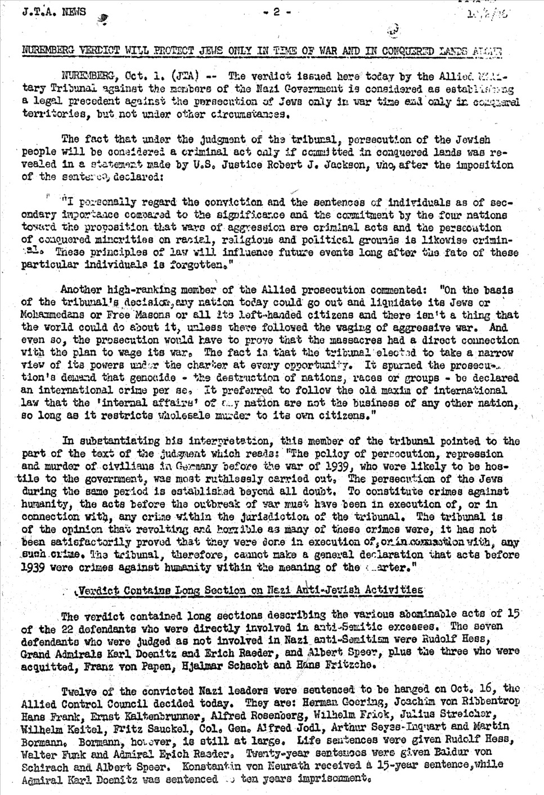

HN-559: Jewish press examines a limitation in the Nuremberg judgment
HN-559 · October 11, 1946 · War, Conflict & Security > War Crimes, Massacres & Genocide > War-crimes prosecutions

page image (issue PDF)Recorded finding
Discovery narrative
Source: National Jewish Post, p. 7 — original page; U.S. Holocaust Memorial Museum, tribunal verdicts.
Report: The article “Nuremberg Decision Means Just Don't Do It In Time Of War” criticized how the tribunal's decision treated persecution of Jews, discussing the relationship between crimes against humanity and wartime acts.
Assessment: On October 1, 1946, the International Military Tribunal convicted nineteen defendants and imposed twelve death sentences. The Jewish correspondent was making a contemporary legal critique, not reporting that prewar persecution was harmless or that genocide did not happen. The tribunal's jurisdictional reasoning and the subsequent evolution of international criminal law are distinct matters.
Identity-review candidate peers: HN-556:Algorithmic
Original archive images (3)
Authentic images retrieved from Jewish Telegraphic Agency Archive, Historic Oregon Newspapers (University of Oregon) and Hoosier State Chronicles (Indiana State Library). Article crops are located using the archive's own OCR word coordinates and rendered at native crop resolution; article clips are assembled from the archive's own article-block images; page images marked "archive tiles" are stitched from the archive's own tiled page service at its 256-px tile cap; page images marked "issue PDF" are single pages rasterised from the archive's own issue PDF, with the page chosen by matching the headline against the PDF's text layer; page scans are reduced-size access renditions. No images were generated, mocked, or retouched.

Jewish Telegraphic Agency Archive
Open larger view · Archive viewer (full resolution)

Historic Oregon Newspapers (University of Oregon)
Open larger view · Archive viewer (full resolution)

Hoosier State Chronicles (Indiana State Library)
Open larger view · Archive viewer (full resolution)
Source acquisition
Status: Archive images acquired
Authentic archive-owned image renditions were retrieved for this record and are displayed above. The source-acquisition manifest preserves the original pre-acquisition feasibility assessment.
Original seed
URL (preserved verbatim): https://newspapers.library.in.gov/?a=d&d=JPOST19461011-01.1.7
Saved research report: Historical_Newspaper_Event_Research_553-577_2026-10-23.md
Evidence note: A newspaper report means a historical publication made a claim; it does not establish that claim as fact. Contemporary reporting is separated from later scholarly context and our own assessment.